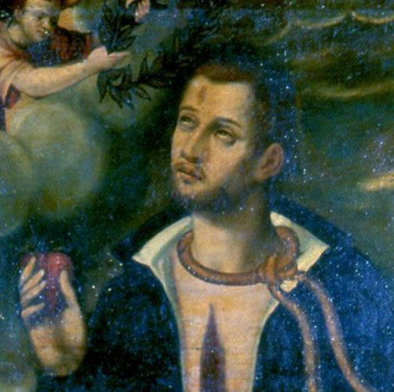

Isusovački blaženici
Isusovac · Brat pomoćnik · Mučenik
Bl. Dominik Collins
oko 1566.–1602.
Bivši irski vojnik postao je isusovački brat, njegovao zaražene i ranjenike te nakon povratka u domovinu podnio mučeništvo odbivši se odreći katoličke vjere.
Tekst je preveden i prilagođen uz pomoć umjetne inteligencije.

Izvor slike
- Spomendan
- 31. listopada
- Zaštitništvo
- Nije navedeno u izvoru
- Životni vijek
- oko 1566.–1602.
- Djelovanje
- Bolesnici i umirući · Progoni i progonstvo · Mučeništvo
- Razdoblje
- 16., 17. stoljeće
- Podrijetlo
- Youghal, Irska
- Redovnički poziv
- Brat pomoćnik
- Mučeništvo
- 31. listopada 1602., Youghal
U kalendaru zbirke koristi se dan smrti. Taj datum nije zasebna potvrda liturgijskoga spomendana.
Životopis
Dominik Collins rođen je oko 1566. u trgovačkoj obitelji u Youghalu, u irskoj grofoviji Cork. Katoličkom mladiću tadašnja Irska nije pružala mnogo mogućnosti. Oko dvadesete godine otišao je na kontinent i neko vrijeme radio kao sluga u Bretanji, želeći ući u konjicu. U vojnoj je službi napredovao do časničkoga položaja. Ratovao je za vojvodu od Mercœura, a nakon zauzimanja važne utvrde postao njezin upravitelj.
U španjolskoj službi dobio je mirovinu i mjesto u La Coruñi, ali sve ga je manje privlačila vojnička karijera. Susret s irskim isusovcem Thomasom Whiteom 1598. pomogao mu je izreći želju za redovničkim životom. Nije tražio svećeništvo, nego služenje kao brat. Premda su poglavari dvojili može li se iskusni ratnik prilagoditi, prihvaćen je u Santiagu de Composteli. Tijekom kuge ostao je uz oboljelu subraću i dva mjeseca ih njegovao.
Na molbu Jamesa Archera 1601. pridružio se isusovačkomu pratitelju španjolske ekspedicije u Irsku. Oluja je razdvojila njihove brodove. Poslije poraza kod Kinsalea Collins se povukao s O’Sullivanom Beareom i završio u opsjednutom Dunboyu. Njegova služba ondje bila je njega ranjenih i duhovna potpora, a ne povratak ratovanju. Nakon pada utvrde u lipnju 1602. odveden je na ispitivanje i mučenje.
Lord Mountjoy pokušao ga je pridobiti za englesku vojsku i Englesku Crkvu. Nije prihvatio ni obećane nagrade ni savjet da promjenu vjere samo odglumi. U rodnom je Youghalu 31. listopada 1602. pred pogubljenje govorio irski i engleski, potvrdivši zbog čega umire. Ivan Pavao II. proglasio ga je blaženim 1992. Spomen-obilježje kod Sjevernih vrata čuva uspomenu na njegovo mučeništvo.
Tekst je preveden i prilagođen uz pomoć umjetne inteligencije.
Pročitaj više na izvornoj stranici ↗